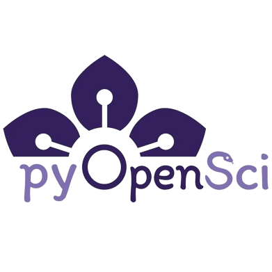

pyOpenSci: My Experience
2024-07-23
Scan to view the slides
The Journal of Open Source Software (JOSS)
JOSS
JOSS is a developer friendly, open access journal for research software packages.
The recording of my talk on JOSS can be accessed here.
What Exactly Do You Mean by ‘Journal’
The Journal of Open Source Software (JOSS) is an academic journal (ISSN 2475-9066) with a formal peer review process that is designed to improve the quality of the software submitted. Upon acceptance into JOSS, a Crossref DOI is minted and we list your paper on the JOSS website.
Do We Not Have Enough Journals Already
Perhaps, and in a perfect world we’d rather papers about software were not necessary but we recognise that for most researchers, papers and not software are the currency of academic research and that citations are required for a good career.
We built this journal because we believe that after you have done the hard work of writing great software, it should not take weeks and months to write a paper about your work.
You Said Developer Friendly, What Do You Mean
We have a simple submission workflow and extensive documentation to help you prepare your submission. If your software is already well documented then paper preparation should take no more than an hour.
You can read more about our motivations to build JOSS in our announcement blog post.
My Submission

pyOpenSci
pyOpenSci
We support the scientific Python tools that drive open science through peer review, training and community building.
We build diverse community that supports free and open Python tools for processing scientific data. We also build technical skills needed to contribute to open source and that support open science. Join our global community.

Pre-Submission Enquiry
Review Process
Documentation:
Review Process
Documentation:
Review Process
README.md:
Review Process
README.md:
Review Process
README.md:
Review Process
README.md:
Review Process
Usability:
Review Process
Functionality:
Review Process
Functionality:
Review Process
Functionality:
Package Acceptance
If the package has an obvious research application according to JOSS’s definition in their submission requirements, then one can submit their package to JOSS through pyOpenSci.

Blog Post (Optional)
Conclusions
- pyOpenSci still in its infancy (32 packages as of 2024-06-12)
- Easily integrates with JOSS
- Exposure for your package (potentially more so in the future)
- rOpenSci for Python, see blog launch
- Always looking for package reviewers
Talk on quarto next…
pyOpenSci: My Experience - https://paddyroddy.github.io/talks